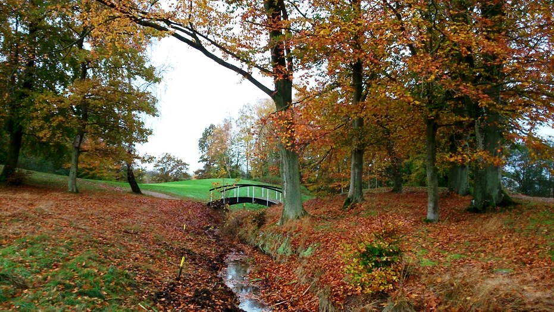
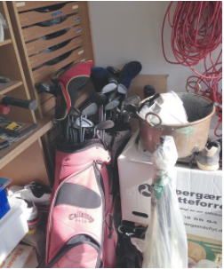
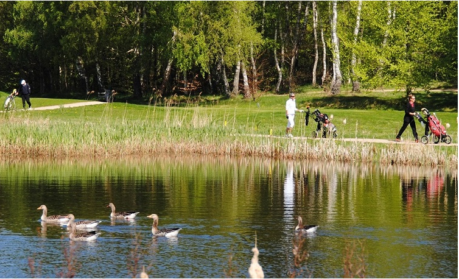
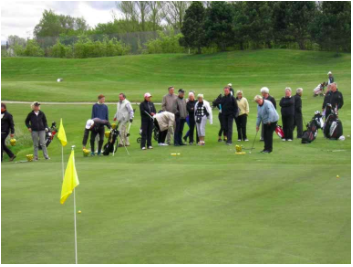
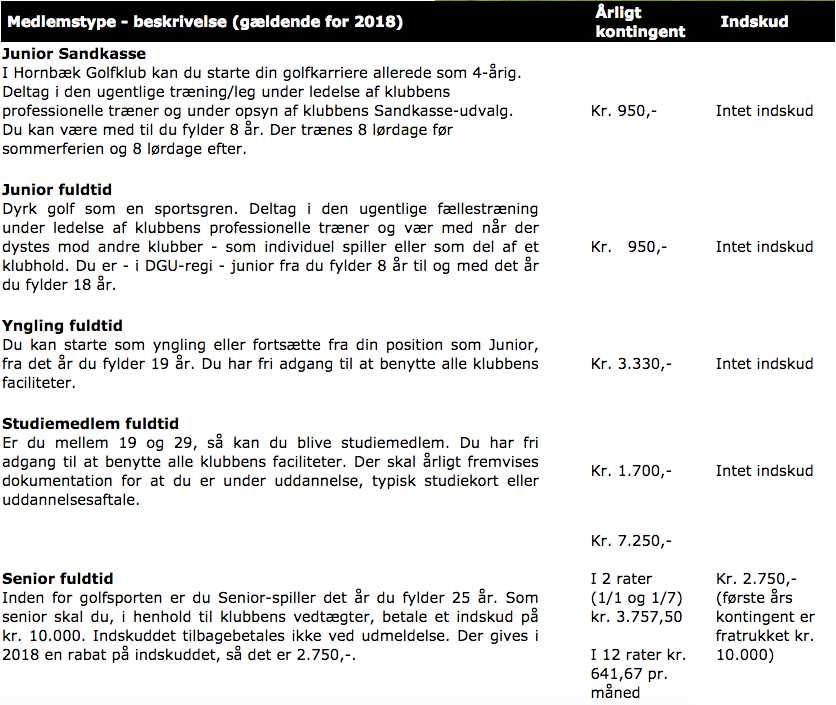
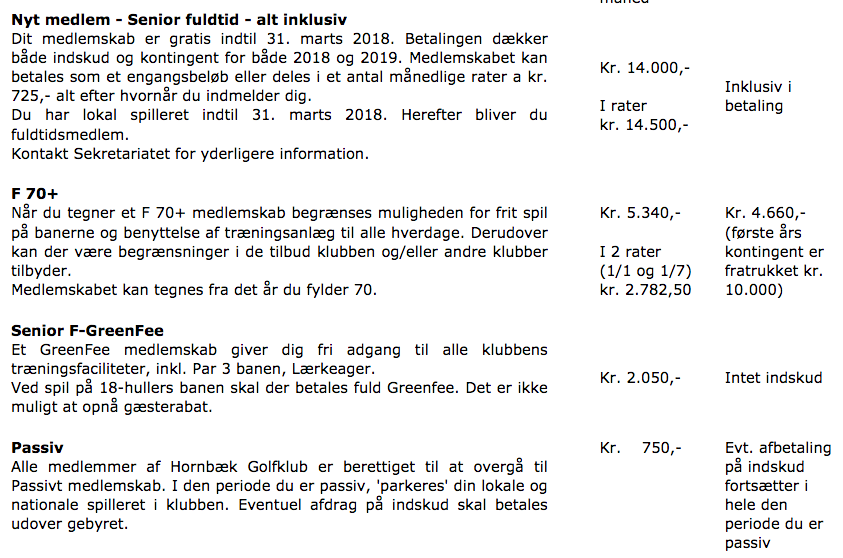
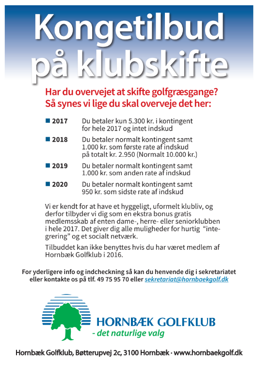
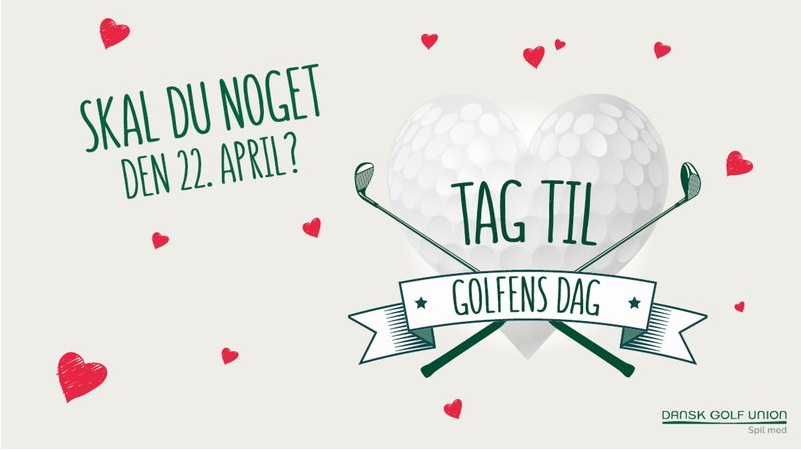

<div class="pages">
  <div data-page="signup" class="page navbar-fixed toolbar-fixed" >
    <div class="navbar">
      <div class="navbar-inner">
        <div class="left">
          <a href="#" class="link back icon-only"><i class="icon icon-back"></i></a>
          <!-- <a href="#" class="back link icon-only"><i class="icon icon-back"></i></a> -->
        </div>
        <div class="center">Bliv Medlem</div>
        <!-- <div class="right"></div> -->
        <div class="right">
        </div>
      </div>
    </div>
    <div class="page-content" style="padding-top:45px;">
       <div class="content-block">
          <p><b>Hvorfor spille golf i Hornbæk Golfklub?</b></p>
          <p>Der er rigtig mange gode grunde til at blive medlem i Hornbæk Golfklub. Golf i Hornbæk:<br />
          - er en familievenlig sport for folk i alle aldre<br />
          - giver nye venskaber og hyggeligt samvær med positive og glade mennesker<br />
          - er motion og frisk luft i dejlige omgivelser<br />
          - er en konkurrencesport, hvor du allerede fra starten kan konkurrere med både dig selv og andre uanset niveau.</p>
        </div>
        <div class="content-block">
          <center></center>
        </div>
        <div class="content-block">
          <p>I Hornbæk Golfklub har du mulighed for at dyrke og nyde alle disse fortræffeligheder og du får muligheden for at opleve fascinationen ved golfsporten. Uanset om du er begynder eller rutineret, kan du konstant finde udfordringer og udvikle dit golfspil på en af Danmarks smukkeste og mest udfordrende baner.</p>
          <p>Hornbæk Golfklubs bane og faciliteter er 100 % ejet af medlemmerne. Vi åbnede de første 9 huller i 1998 og de sidste 9 huller i 2000. Siden har 18 hullers banen udviklet sig og er i 2010 og 2011, i 2 forskellige afstemninger, blevet placeret blandt Danmarks 10 bedste golfbaner.</p>
        </div>
        <div class="content-block">
          <center></center>
        </div>
        <div class="content-block">
          <p>Klubben har et velfungerende og engageret socialt liv med mange tilbud til spillere i alle aldre og på alle niveauer. Vi har dygtige og engagerede frivillige, der vil tage godt imod dig. I Hornbæk Golfklub er der både en seniorklub, en dameklub og en herreklub der alle er meget aktive. Vi afholder en lang række matcher, hvor der er stor deltagelse og der er mange sociale aktiviteter centreret om restauranten.</p>
          <p>Juniorudvalget og Eliteafdelingen sørger for, at du også får mulighed for at få prøvet golfen som den spændende sport den er, gennem deltagelse i en række nationale turneringer under DGU.</p>
          <p>Begynderudvalget er klar til at tage mod nye medlemmer og vil sammen med vores dygtige golftræner sikre, at du lærer golfens grundbegreber for at give dig den bedste oplevelse. Vi har derfor etableret et begynderforløb med tilknyttet mentorordning, der sikrer, at du bliver golfer i løbet af 4 uger.</p>
        </div>
        <div class="content-block">
          <center></center>
        </div>
        <div class="content-block">
          <p>Vi glæder os til at se dig i Hornbæk Golfklub.</p>
          <p>Bestyrelsen</p>
        </div>
        <div class="content-block-title">More</div>
        <div class="list-block accordion-list">
          <ul>
            <!-- <li class="accordion-item"><a href="#" class="item-link item-content">
                <div class="item-inner"> 
                  <div class="item-title">Golfer igen</div>
                </div></a>
              <div class="accordion-item-content">
                <div class="content-block">
                  <p><b>Golfer igen?  Kunne det ikke være skønt?</b></p>
                  <p>Hornbæk Golfklub introducerer en nyhed til dig, der tidligere har spillet golf og nu gerne vil i gang igen.</p>
                  <p><b>Dette program er noget for dig, når:</b><br />
                  - golfen er blevet ”rusten” efter nogle år væk fra denne herlige hobby<br />
                  - du har gennemgået et begynderforløb i en golfklub, men ikke har fundet det rette sted at komme videre<br />
                  - du er klubløs, der gerne vil videre i et mere struktureret forløb og få et netværk</p>
                  <center></center>
                  <p><b>Det særlige ved ”Golfer igen” er at:</b><br />
                  - forløbet gennemføres sammen med andre med samme baggrund<br />
                  - du får et netværk at træne og spille sammen med<br />
                  - vi dyrker de sociale aspekter ved golf, via tilbud om fælles frokoster og samvær på spilledagene, så du hurtigt lærer andre at kende og får nogen at spille med<br />
                  - holdet har en eller flere erfarne mentorer fra Hornbæk Golfklub, der sørger for programmet og hjælper og hygger om jer undervejs. Mentoren kan du altid kontakte, når du har spørgsmål<br />
                  - du lærer Hornbæk Golfklub godt at kende, og når forløbet er slut, får du et godt tilbud på at blive medlem i vores dejlige klub, så du kan bevare dit nye netværk (flere medlemstyper med og uden DGU-kort). Begge dele er guld værd.<br />
                  - forløbet er overskueligt og struktureret og løber over 6 uger<br />
                  - din teori får et brush-up<<br />
                  - du får to ugentlige træninger - søndag eftermiddag og tirsdag hen under aften<br />
                  - du får dit golfsving støvet af og forbedret ved de tre fællestræninger med vore pro’er<br />
                  - der er fri adgang til træningsfaciliteterne 24 timer i døgnet i alle 6 uger og vi har ubegrænset gratis træningsbolde</p>
                  <center></center>
                  <p>Prisen for forløbet er kr. 2998. Kontakt sekretariatet for tilmelding og et godt tilbud.  Du kan kontakte Sekretariat på tlf. 49 75 95 70 eller kom forbi Bøtterupvej 2C i i Hornbæk. Du kan se <a href="abningstider.html">Sekretariatets åbningstider her.</a></p>
                  <p>Betingelsen for at deltage på holdet er, at du ikke er medlem af en anden golfklub og at du havde/har et handicap på 54 eller var på vej til at få det. Har du lavere handicap fra tidligere, så er det også helt fint. Du har selv golfudstyret – det skal bare støves af.</p>
                  <p>Holdet starter tirsdag den 12. april 2016 kl. 16:30, hvor vi starter med en fælles frokost, introduktion til programmet, rundvisning og træning. Der er begrænset antal pladser på holdet.</p>
                </div>
              </div>
            </li> -->
            <li class="accordion-item"><a href="#" class="item-link item-content">
                <div class="item-inner"> 
                  <div class="item-title">Lær golf på 4 uger</div>
                </div></a>
              <div class="accordion-item-content">
                <div class="content-block">
                  <p><a href="mentoroggolfven.html">Mentor og Golfven</a></p>
                  <p><a href="mentorvejledning.html">Mentor vejledning</a></p>
                  <p><a href="golfvenvejledning.html">Golfven vejledning</a></p>

                  <p><b>LG4U programmet indeholder følgende:</b></p>
                    - Frokost alle dage<br />
                    - 4 x fællestræning med klubbens Pro<br />
                    - Teori og regelundervisning<br />
                    - Hjælp og støtte fra din Mentor<br />
                    - Brug af HGK’s faciliteter under hele førløbet<br />
                    - Lån af et sæt golfkøller & golfbag<br />
                    - Deltagelse i Søndags Scramble inkl. mad.</p>

                  <p><b>Forløb og medlemskab</b></p>
                  <p>LG4U er et "all inclusive" intensivt program baseret på at NG (Ny Golfer) får tildelt en Mentor (en spiller med handicap 36 eller lavere fra HGK - Hornbæk Golfklub) i de 4 uger forløbet dækker.</p>
                  <center></center>
                  <p>Som deltager kan du, når du ikke modtager fællestræning, frit træne på klubbens anlæg helt fra første dag og allerede fra starten af programmet, kan du med fordel, sammen med din mentor eller andre, påbegynde spil på Lærkeager banen, som er HGK’s Par-3 bane. I løbet af de 4 uger, bliver du ligeledes introduceret til den store bane hvor der en søndag spilles en holdturnering hvor du kan være med uanset hvor langt du er med dit golfspil.</p>
                  
                  <p>For at opnå banelicens til Hornbæk Goilfbanes 18 huller, skal du 3 gange score 18 point eller mere på Lærkeager, med 20 tildelte slag. Den ene af gangene skal være med din mentor - de øvrige gange kan være med et medlem med max. 36 i HCP. Udfyldte og underskrevne scorekort afleveres i Sekretariatet.</p>
                  
                  <p>Lørdag er der træning og teoriundervisning sammen med kyndige vejledere og klubbens proer.</p>
                  
                  <p>Tre tirsdage er der Banetræning på Lærkeager, hvor både spil og fællesskab kan dyrkes.</p>
                  
                  <p>Når du har bestået alle teori- og slagprøver, og du har fået noteret minimum 18 points 3 gange på par-3 banen, bliver du ved indmeldelse i HGK fuldgyldigt medlem af klubben, og får din spillelicens/bagmærke med et HCP på 54, med ret til at spille på den store bane.</p>
                  
                  <p>Se programmet for april 2018 ved at klikke <a href="http://www.hornbaekgolf.dk/images/Begynder/2018/LG4U_APRIL_2018.pdf" class="external">HER</a>.</p>
                  
                  <p><b>Du kan tilmelde dig kurset ved at kontakte Sekretariatet på telefon 49759570 eller sende en mail til </b></p>

                  <p><a href="">sekretariat@hornbaekgolf.dk</a></p>

                  <p><b>Efter de 4 uger har du to muligheder:</b></p>
                  <p>1. Indmeldelse som fuldtidsmedlem i HGK med de fordele, der er beskrevet nedenfor.<br />
                  2. Indmeldelse som Greenfee medlem med frit spil på Lærkeager banen og fri brug af træningsfaciliteterne. Du kan købe det lånte golfsæt til en favorabel pris.</p>
                  <p><b>Medlemskab via LG4U:</b><br />
                  <p>HGK ejes af medlemmerne og et medlemskab af HGK indebærer betaling af et indskud og årlig betaling af et kontingent som vedtages på den årlige generalforsamling.</p>
                  <p><b>Der er fordele ved at melde sig ind som fuldtidsmedlem i HGK i forlængelse af dit LG4U forløb:</b></p>
                  <p>- Din lånte golfbag og golfkøller skal ikke leveres retur<br />
                  - Vi har forskellige tilbud på medlemskab. Det hører du nærmere om når kurset nærmer sig en afslutning.<br />
                  - Du kan vælge at betale dit kontingent i en eller flere rater.<br />
                  <p>Vi anbefaler alle nye medlemmer at læse klubbens vedtægter som kan findes på hjemmesiden under Klubben. Vi henleder her opmærksomheden på, at såfremt et medlem efter indmeldelse fortryder og ønsker at melde sig ud, skal dette, jf. klubbens vedtægter, ske ved skriftlig henvendelse til klubbens Sekretariat senest 30. november, for at undgå det kommende års kontingent.</p>
                  <p>HGK ønsker nye medlemmer hjertelig velkommen i vores dejlige og naturskønne golfklub, med et af de laveste kontingenter i det Nordsjællandske område.</p>
                </div>
              </div>
            </li>
            <li class="accordion-item"><a href="#" class="item-link item-content">
                <div class="item-inner"> 
                  <div class="item-title">Medlemstyper og priser</div>
                </div></a>
              <div class="accordion-item-content">
                <div class="content-block">
                  <p><a href="betalingsservice.html">Tilmeld til Betalingsservice</a></p>

                  <p><b>Medlemstyper og priser 2018</b></p>
                  <p>Er du junior eller senior? Spiller du ofte eller sjældent? Er golfen din sportsgren Nr. 1 eller en hyggelig form for fritidsfornøjelse?</p>
                  <center></center>
                  <p>I Hornbæk Golfklub arbejder vi med en række forskellige former for medlemskab. Nedenfor vil vi beskrive konditionerne for forskellige medlemstyper:</p>
                  <center></center>
                  <center></center>
                  <!-- <center></center> -->
                  <p><b>Kontingentopkrævninger udsendes medio december med betalingsfrist den 1' hverdag i januar måned.<br />
                  Betaling i 12 rater kræver tilmelding til Betalingsservice.<br />
                  For helårsbetalinger opkræves kr. 50 ved manglende tilmelding til Betalingsservice.</b></p>
                </div>
              </div>
            </li>
            <li class="accordion-item"><a href="#" class="item-link item-content">
                <div class="item-inner"> 
                  <div class="item-title">Skift til Hornbæk Golfklub</div>
                </div></a>
              <div class="accordion-item-content">
                <div class="content-block">
                  <p><a href="indmeldelsesblanket.html">Indmeldelsesblanket</a></p>
                  <center></center>
                </div>
              </div>
            </li>
            <li class="accordion-item"><a href="#" class="item-link item-content">
                <div class="item-inner"> 
                  <div class="item-title">Nyhedsbreve - Tilmelding</div>
                </div></a>
              <div class="accordion-item-content">
                <div class="content-block">
                  <p>Hvis du gerne vil følge lidt med i hvad der sker i og omkring Hornbæk Golfklub er muligheden her.</p>
                  <p>Her kan du nemlig tilmelde dig nyhedsbreve fra henholdsvis Hornbæk Golfklub, Shoppen og CaféInGolf og dermed få tilsendt tilbud og information omkring hvad der foregår i klubben.</p>
                  <p>I skemaet til højre indtaster du et "Bruger Navn" (gerne golfbox nr. eller lign.) samt den e-mail adresse du gerne vil modtage nyhedsbrevene på.</p>
                  <p>Du kan til enhver tid framelde dig nyhedsbrevene via linket i bunden af mailen.</p>
                  <center></center>
                </div>
              </div>
            </li>
            <li class="accordion-item"><a href="#" class="item-link item-content">
              <div class="item-inner"> 
                <div class="item-title">Golfens Dag 2018</div>
              </div></a>
              <div class="accordion-item-content">
                <div class="content-block">
                  <center></center>
                  <p>Kom forbi Hornbæk Golfklub. Så kan du få lov at prøve spillet, få undervisning af en professionel og tale med både nye som erfarne golfspillere.</p>
                </div>
              </div>
            </li>
          </ul>
        </div>
    </div>
    </div>
    </div>
  </div>
</div>
